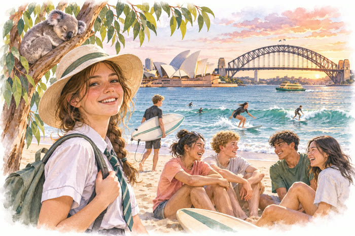

Listen to the text
Speed:

Subject: Hello from upside down! Hi everybody, I promised to write when I got here, so here I am: your classmate Daryna, reporting from Sydney, Australia. I am spending a term with my aunt's family, and I have been here for three weeks. Everything is the other way round, and I love it. First, the seasons. You are enjoying May, and I am wearing a jumper, because autumn is ending here. The school year starts in late January and finishes in December. Imagine a New Year on the beach: Santa Claus arrives on a surfboard. I am not joking. Second, the school. I wear a uniform with a wide hat, which is a rule: "No hat, no play". The sun here is very strong, even in autumn. Lessons start at nine, and we have sport three times a week. I have tried surfing twice. The first time I stood on the board for two seconds. The second time, for three. That is progress. Third, the animals. Yesterday I fed a kangaroo in a wildlife park. It took the food from my hand very politely, like an old gentleman. Koalas sleep about twenty hours a day, and I envy them. Parrots here are as common as sparrows at home: green, red and white ones sit on the wires and scream at six in the morning. My uncle taught me to check my shoes for spiders. I thought it was a joke. It was not. Sydney itself is beautiful. The Opera House looks like white sails or like the shells of a giant sea creature, and next to it there is a huge steel bridge that locals call "the Coathanger". You can climb to the top of it with a guide. I am saving my pocket money. People are relaxed and friendly. They shorten every word: breakfast is "brekkie", afternoon is "arvo", and a barbecue is a "barbie". On my first day a girl said, "See you this arvo at the barbie." I smiled and understood nothing. I miss you all, and I miss black bread. If you were here, we would have a barbie on the beach. Write to me! When you are having your first lesson, I am already going to bed, so don't expect quick answers. See you in September. I will bring a boomerang. If it works, it will come back to me, so maybe it is not the best present. Hugs, Daryna
Tap any sentence to hear it again.
Сподобалось? На сайті ще більше матеріалів для вчителів!
Reader, презентації, ігри, діагностичні та контрольні роботи до підручників 1-11 класів.
Перейти на сайт materials.allaenglish.com